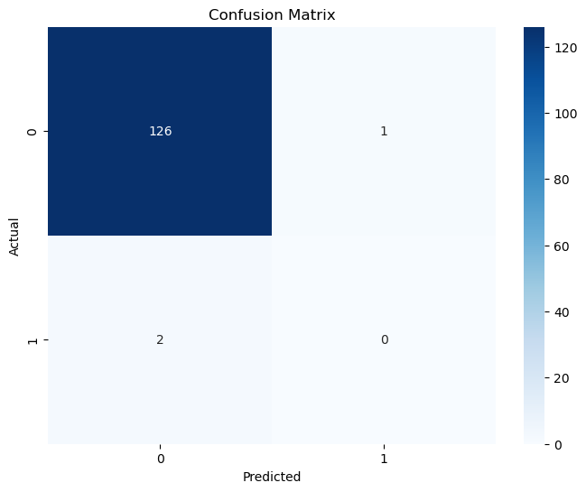

import pandas as pdfrom sklearn.model_selection import train_test_splitfrom sklearn.preprocessing import LabelEncoder# Loading Merged Datanb_merged = pd.read_csv("/Users/kendallgilbert/dsan-5000-project-kendallgilbert180/dsan-website/5000-website/data/01-modified-data/merged.csv")# Define the target based on specified criteriacriteria = (nb_merged['Marine Protected Area (sqkm)'] >1800) &\ (nb_merged['Aqua Production (Millions)'] >105588) &\ (nb_merged['Fishing Exports (Millions)'] >2400) &\ (nb_merged['Inventions (number)'] >=70) &\ (nb_merged['Instruments (number)'] >=100)# Create the "Innovative" target variable. Innovative is 0, Non innovative is 1nb_merged['Innovative'] = criteria.astype(int)# Convert all numeric columns to integersnumeric_cols = nb_merged.select_dtypes(include=['number'])nb_merged[numeric_cols.columns] = numeric_cols.astype(int)# Encode the "Country" column using LabelEncoderlabel_encoder = LabelEncoder()nb_merged['Country'] = label_encoder.fit_transform(nb_merged['Country'])# Split the data into features (X) and the target (y)X = nb_merged.drop('Innovative', axis=1)y = nb_merged['Innovative']# Split the data into training and the remaining dataX_train, X_remaining, y_train, y_remaining = train_test_split(X, y, test_size=0.3, random_state=42)# Split the remaining data into testing and validation setsX_test, X_val, y_test, y_val = train_test_split(X_remaining, y_remaining, test_size=0.5, random_state=42)from sklearn.naive_bayes import GaussianNBfrom sklearn.metrics import accuracy_score, classification_report# Create a Gaussian Naive Bayes classifiergnb = GaussianNB()gnb.fit(X_train, y_train)# Make predictions on the testing sety_test_pred = gnb.predict(X_test)# Make predictions on the validation sety_val_pred = gnb.predict(X_val)# Evaluate the model's performance on the testing setaccuracy_test = accuracy_score(y_test, y_test_pred)print("Testing Accuracy:", accuracy_test)# Generate a classification report for more detailed performance metrics on the testing setclassification_report_test = classification_report(y_test, y_test_pred)print("Testing Classification Report:\n", classification_report_test)# Evaluate the model's performance on the validation setaccuracy_val = accuracy_score(y_val, y_val_pred)print("Validation Accuracy:", accuracy_val)# Generate a classification report for more detailed performance metrics on the validation setclassification_report_val = classification_report(y_val, y_val_pred)print("Validation Classification Report:\n", classification_report_val)
A table with two rows and two columns that reports the number of true positives, false negatives, false positives, and true negatives.
from sklearn.metrics import confusion_matriximport seaborn as snsimport matplotlib.pyplot as plt# Calculate the confusion matrixcm = confusion_matrix(y_test_pred, y_val_pred)# Plot the confusion matrix as a heatmapplt.figure(figsize=(8, 6))sns.heatmap(cm, annot=True, fmt='d', cmap='Blues')plt.xlabel('Predicted')plt.ylabel('Actual')plt.title('Confusion Matrix')plt.show()

ROC Curve
An ROC curve (receiver operating characteristic curve) is a graph showing the performance of a classification model at all classification thresholds. This curve plots two parameters: True Positive Rate. False Positive Rate